I volunteered in the Ketu region of Ghana with Villanova Engineering Service Learning, partnering with LifeTime Wells International, an organization that has installed more than 3,300 water wells across Ghana and Tanzania since 2004. The work fell into two connected efforts: documenting and assessing the hand pump wells that already serve communities across the region, and physically installing new hand pump wells to bring clean, potable water to communities that needed it.
Working alongside other members of the team, I visited more than 270 communities and villages in Ketu that had hand pump wells previously installed by LifeTime Wells. At every stop we had three objectives. First, we recorded the exact GPS coordinates of each well so it could be loaded into ArcGIS; the goal of the resulting database is to help local communities locate their nearest source of clean water. Second, we inspected each pump and noted its condition, so that the status of every community’s well is known and repairs can be planned. Third, we sat down with community members to understand what the well means to them and to listen to their questions and concerns. This inspection, maintenance, and mapping work covered 200+ wells and supports infrastructure documentation and service planning for the region.
Many of the hand pumps we assessed were more than 15 years old, and some had significant damage. We also saw that some communities are trying to switch from manual pumping to mechanized, automatic pumps.
The second task was installing new hand pump wells. I helped install three, and all three were supplying water to their communities when we finished. On the hardware side, I assembled the three hand-pump well heads, installed the plunger assemblies with traveling valves and piston seals, and deployed 296 feet of steel pump rod. The plunger assembly, driven by the steel rod from the pump handle above, is what lifts groundwater up out of the borehole with each stroke, so getting the valves, seals, and rod string right is what turns a borehole into a working water source.
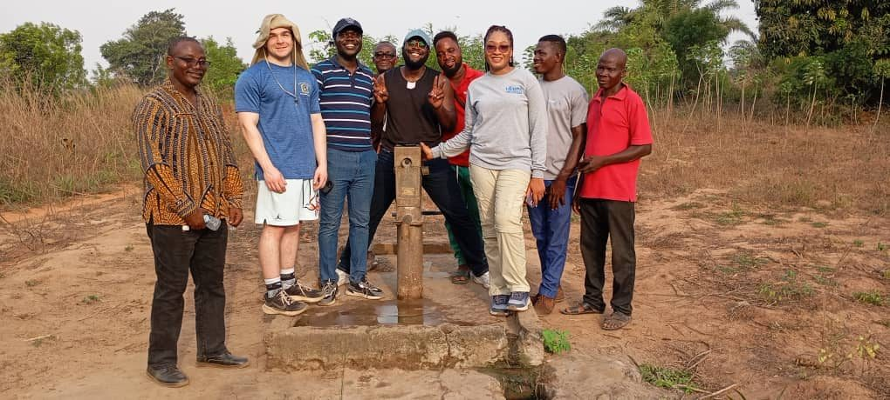
Figure 1: Team photo in the field around an existing hand pump well.
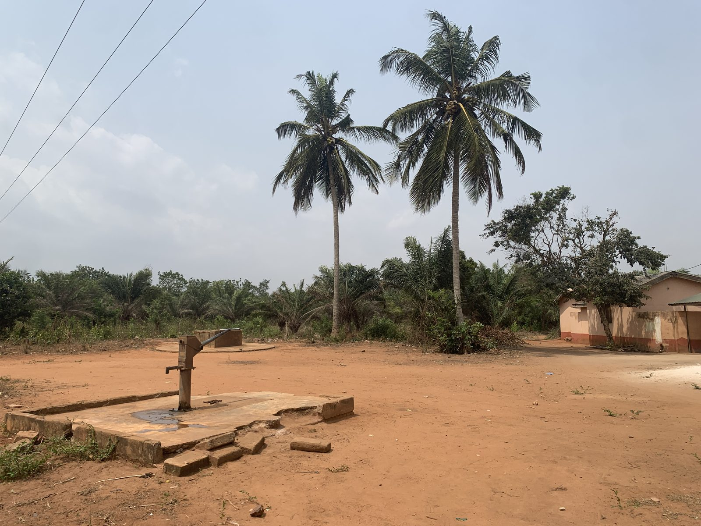
Figure 2: One of the community hand pumps.
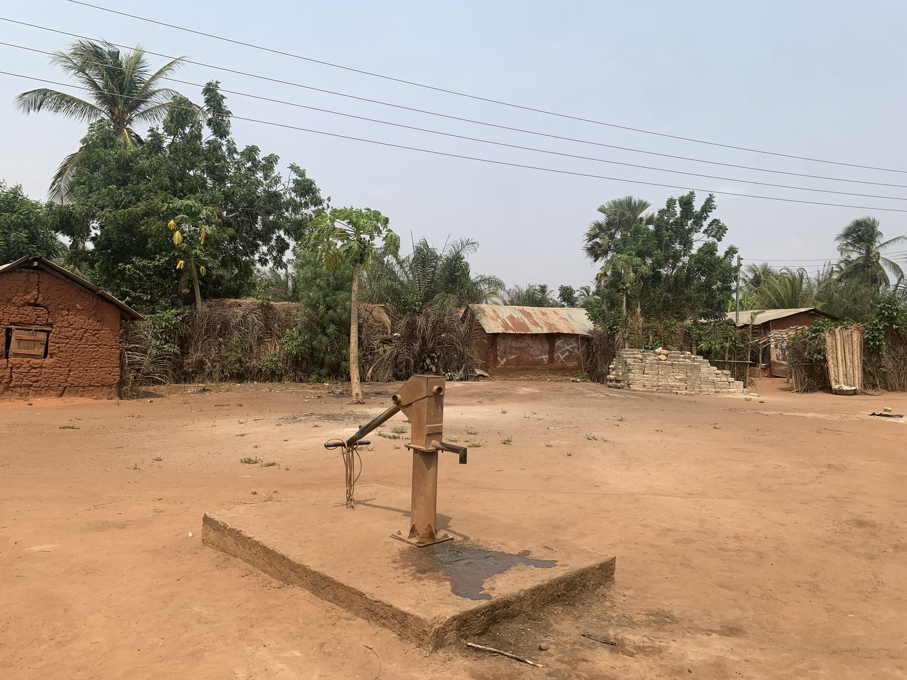
Figure 3: Another hand pump in a different community.
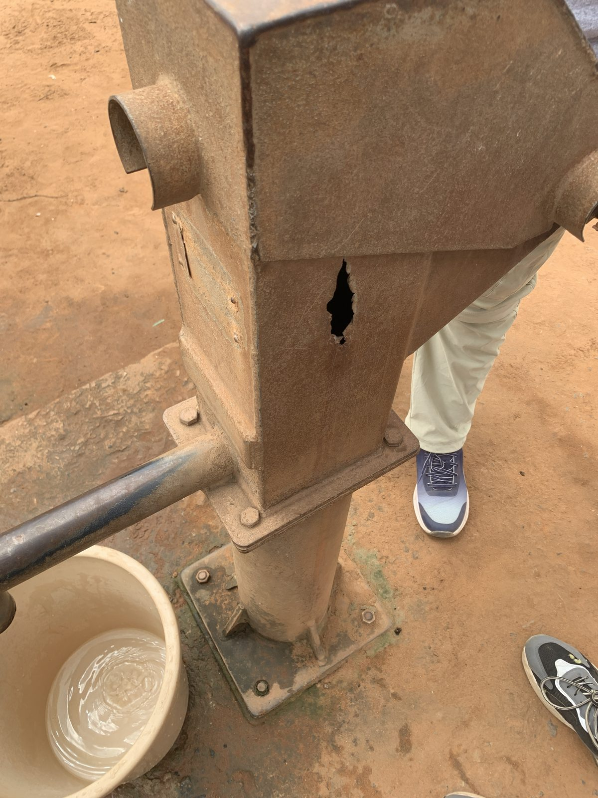
Figure 4: Damage on an existing hand pump we assessed, with a hole through the pump housing.
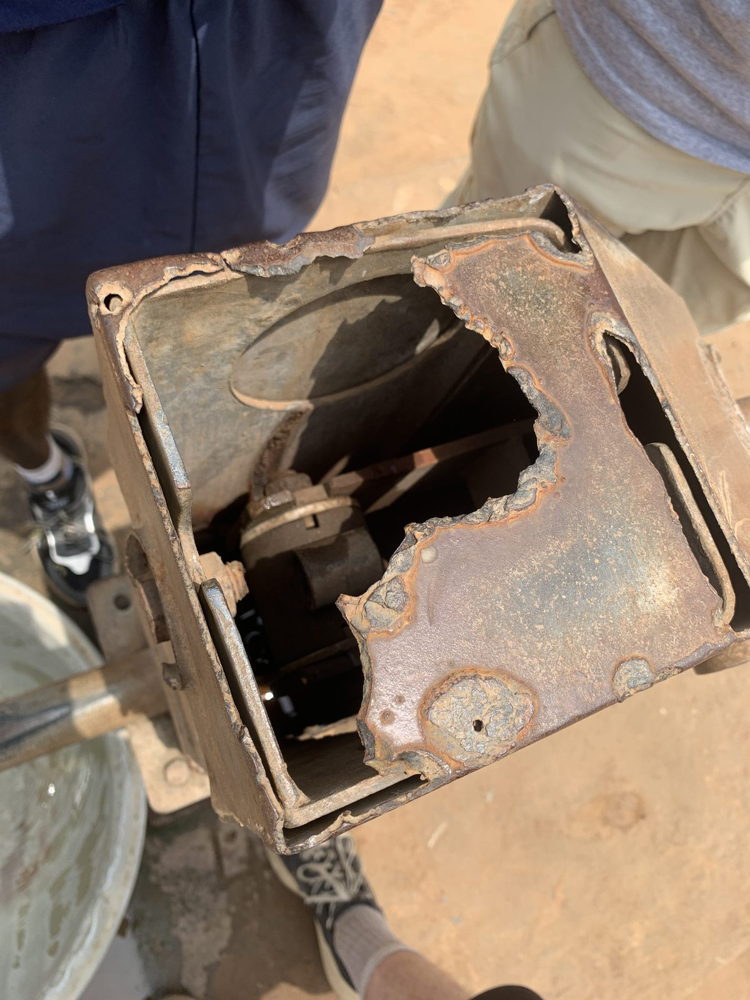
Figure 5: A closer look at the damage to a more weathered hand pump.
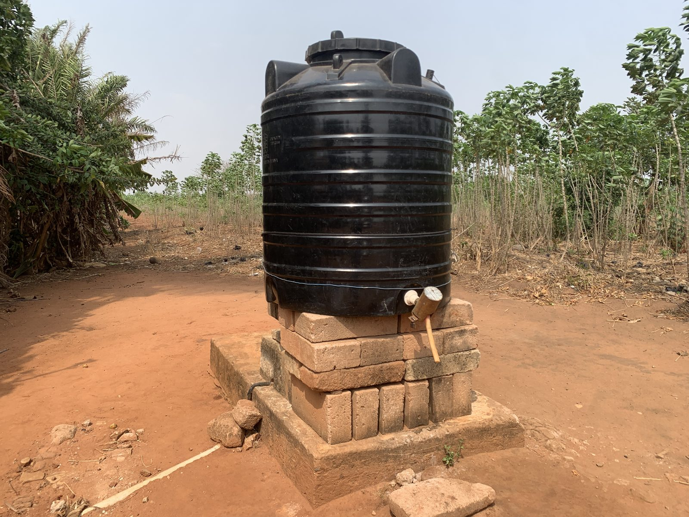
Figure 6: A mechanized, automatic pump. Some communities are switching from manual pumping to tank systems like this.
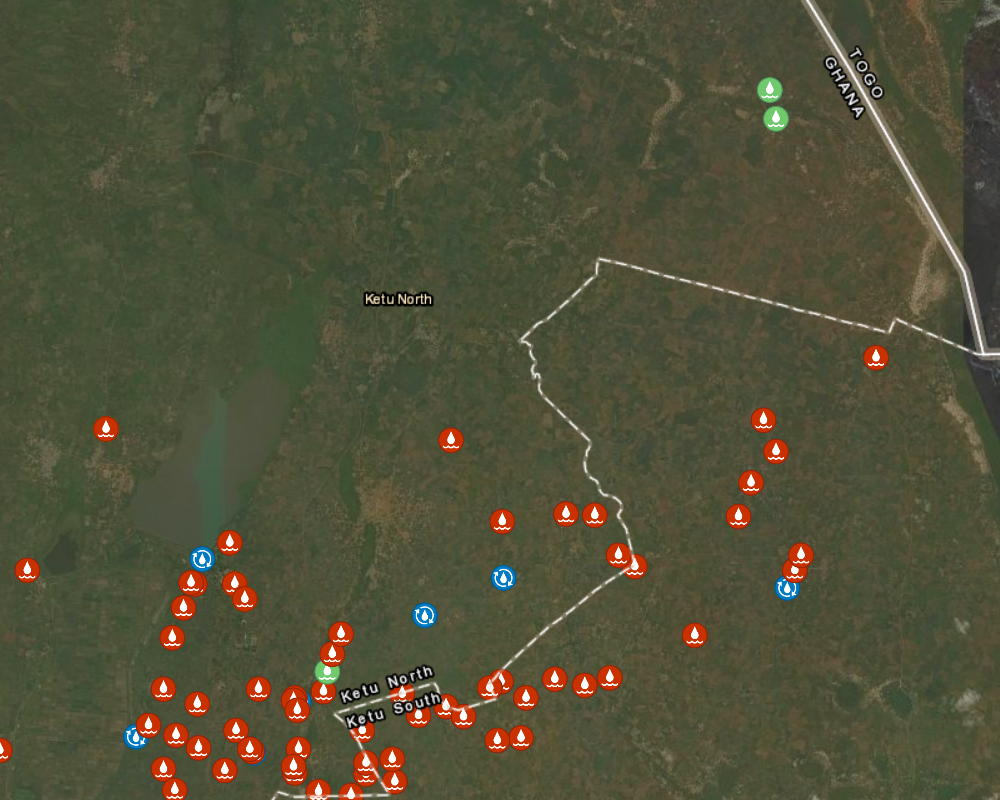
Figure 7: ArcGIS map of the Ketu region, where we did asset management and GPS mapping of existing wells. The red and blue markers are existing pumps we mapped, and the three green markers are the pumps we installed.
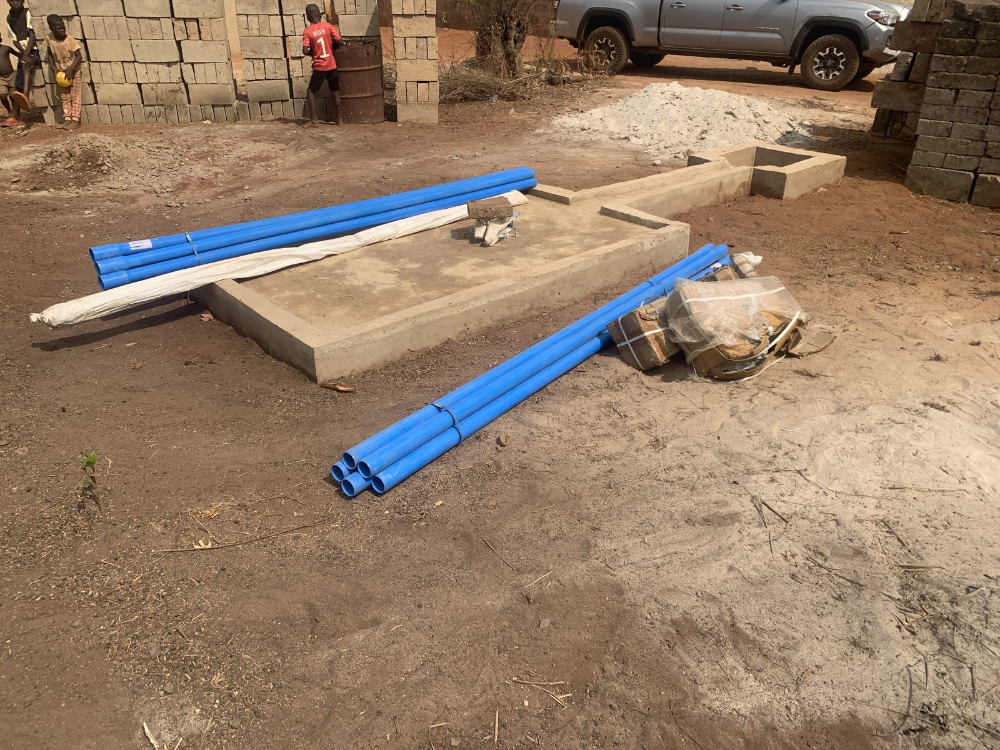
Figure 8: Site setup at the first hand pump installation.
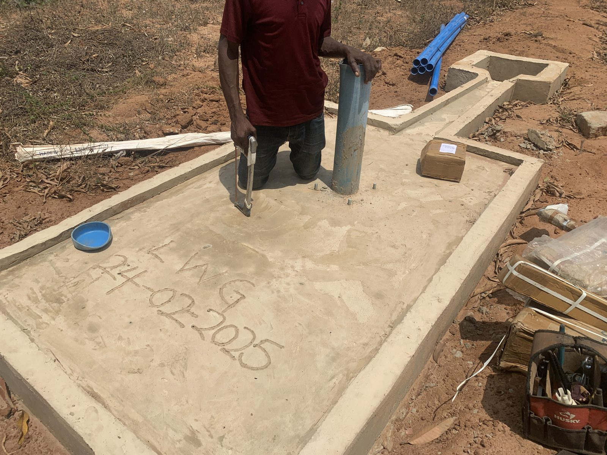
Figure 9: The borehole at the first installation site.
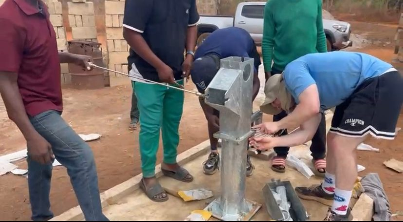
Figure 10: Attaching the head of the pump at the first installation site.
Video 1: The first hand pump we installed working for the first time, pumping clean groundwater.
Video 2: Timelapse of the second hand pump well installation, from start to finish.
Video 3: The hand pump from the timelapse, working after installation.
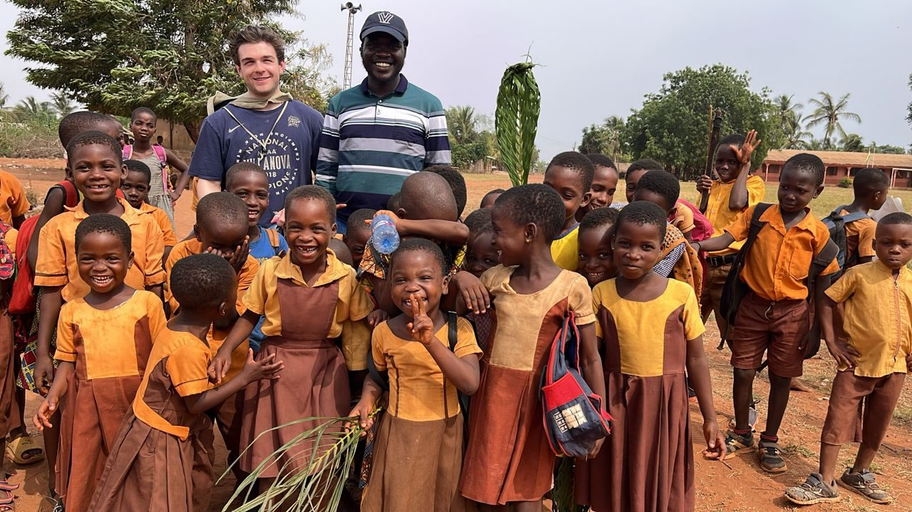
Figure 11: Team photo with local schoolchildren.
Professionally, this experience taught me how to manage GPS mapping software systems like ArcGIS, how manual hand pump wells function and how to install one, how water salinity relates to a well’s proximity to the ocean, and how much maintenance and upkeep it takes to keep a well running for the long term.
Personally, it was one of the most impactful experiences I have taken part in. I was immersed in Ghana’s culture and history, met people with very different stories and backgrounds, and left with a deeper appreciation for basic necessities I had taken for granted. It also changed how I think about service: service is not about what I think would be best for a community, but about doing what others need from me, even when it is tedious or difficult. The only way to help solve a community’s problem is to understand it, and the only way to understand it is to ask, listen, and experience it firsthand.